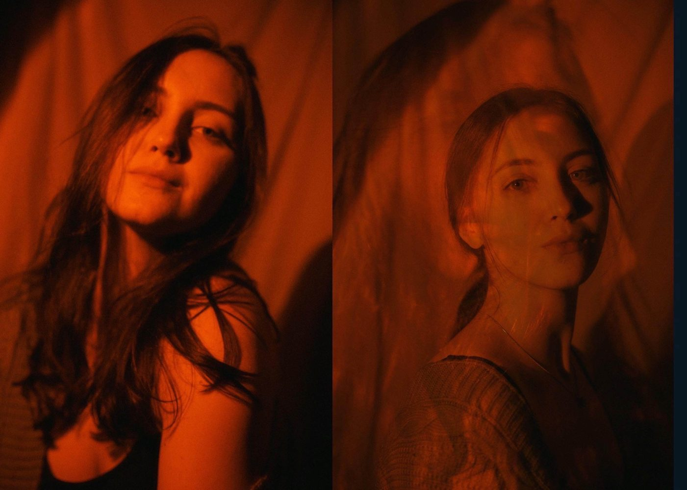
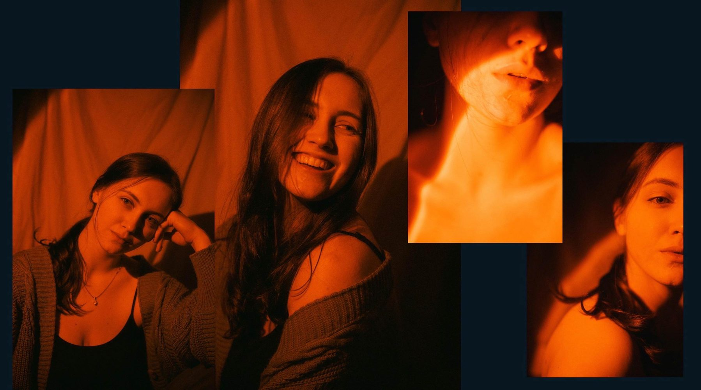
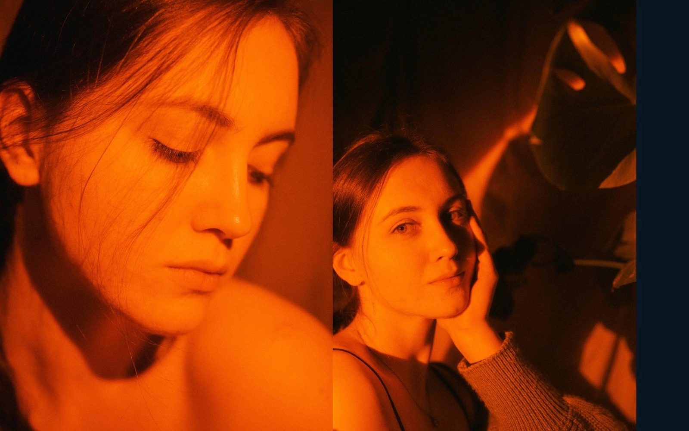

ahoj, já jsem sofi
Tak teď něco víc osobního a mnohem detailnějšího pro ty, které zajímá ta, co stojí za foťákem… já, Sofie.



Holka původně z Prostějova, která vždycky milovala tvořit, a to hlavně rukama. Pamatuju si, že můj pokoj byl vždycky jeden velkej nepořádek a podlaha byla zaskládaná vším možným. Vedla mi jen jedna ulička k oknu a druhá k posteli. Měla jsem rozdělaných tolik věcí, že se mi už nevlezly ani na stůl. Ať už to bylo vyrábění šperků, modelování z jakékoli hmoty nebo lepení koláží z vystřižených stránek z časopisu. Musela jsem jednoduše zkusit všechno. A jak už to tak bývá, člověk se v dospělosti mění. Teď se snažím soustředit ideálně jen na jeden projekt současně a nedokážu žít v neuklizeným bytě :D
V rodině se uměním nikdo neživil, ale náznaky tam byly, vlastně i celkem velký. Moje babička vždycky malovala obrazy a já jsem byla ráda, když jsem u toho procesu mohla být. Obdivovala jsem tahy štětcem a to, když kombinovala do obrazu víc médií. Spolu s dědou měli navíc keramickou dílnu, kde jsem už od školky strávila plno času. Druhá babička kreslila jen občas, pamatuju si třeba, jak mi do památníčku načrtla tanečnici a já jsem nerozuměla tomu, jak to může vypadat tak hezky, když to ani nedělá podle předlohy. No a moje milovaná maminka byla vždycky pasivní umělkyně, nebo aspoň tak o sobě vždycky mluvila. Dokud jsme nezačaly se ségrou jako starší protestovat, brala nás do divadla na balet a doma z rádia často zněla vážná hudba. Možná i proto jsem se kdysi rozhodla začít hrát na klavír, ze kterýho jsem potom úspěšně absolvovala.
V mým životě hrálo obrovskou roli Brno, kam jsem se v patnácti letech odstěhovala kvůli (nebo vlastně i díky) střední škole. Obrovská změna a střet s realitou. Doteď nechápu, že jsem to tady na vlastní pěst zvládla. Malá holka ve velkým městě. Kolem sebe nikoho nezná a překonává skrytýho introverta, kterýho celej život nosí v sobě, aby nezůstala sama. Přesto, že to bylo chvílema těžký a odráželo se to na mým vzhledu i psychice, musím uznat, že jsem na sebe fakt pyšná a moc ráda na tu dobu vzpomínám.
No a proč jsem šla studovat až do Brna? Poslední roky základky jsem se totiž zamilovala do filmařiny. K té jsem se mimochodem dostala skrz herectví, kterým jsem se chtěla původně živit, ale asi všichni víme, jak to herci v Česku mají. Žádná sláva. Tak jsem rychle sundala růžový brýle a zkusila si stát za kamerou. Byla to doslova láska na první pohled. Neskutečně mě bavilo, že můžete zachytit svět svýma očima a ukázat ho i ostatním. Vytváříte si vlastní realitu, vlastní příběhy a postavy. Hrajete si s barvama, úhlem pohledu, hudbou a zvuky a propojujete film s jinými druhy umění. No a fotka, která dokáže doslova zamrazit okamžik a uchovat ho na celý život…
Filmová škola byla tím pádem jasná volba. Vlastně jsem si ani neuměla představit, co jinýho bych mohla studovat. V naší rodině padly návrhy jako zubařka nebo doktorka, protože jsem měla vždycky dobrej prospěch, ale já jsem si nemohla pomoct a pořád mě to táhlo k umění. Velký šance jsem si ale nedávala (bývala jsem na sebe celkem dost tvrdá), o to víc mě překvapilo, když jsem se uviděla na prvním řádku přijatých. No a tak odstartoval můj dospěláckej život, kterej přišel možná o pár let dřív, než je běžný.
V osmnácti jsem si založila živnostenskej list, abych mohla začít konečně naplno podnikat v tom, co mě baví. Pak jsem začala studovat výšku, díky který se mi otevřely další dveře nejen ve světě umění. Tu už mám dostudovanou a teď jsem konečně naplno na volný noze.
A jsem za to moc ráda. Celou dobu studia jsem při škole pracovala a čím dál víc mi vadilo, že na práci nemám tolik energie ani času, kolik bych chtěla. A protože moje práce je zároveň můj koníček, bylo to trochu demotivující. Chtěla jsem se posouvat a nešlo to tak rychle, jak bych si přála. Teď se můžu focení věnovat naplno. Každej den se učím něco novýho a vím, že toho mám ještě šíleně moc před sebou.
Víc už vás zahlcovat nebudu :D Myslím si, že jako základ to bohatě stačí. Kdo o mně chcete vědět víc, budu ráda za společný projekty nebo zakázky, u kterých se můžeme vzájemně líp poznat. Spojit se se mnou můžete jakkoli, přes instagram, mail nebo třeba přes facebook.
Budu se moc těšit!
S.